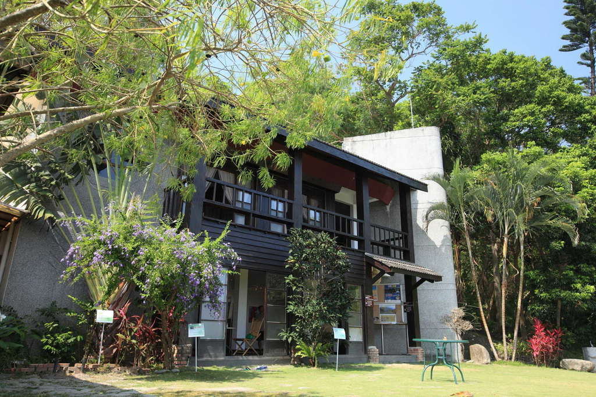
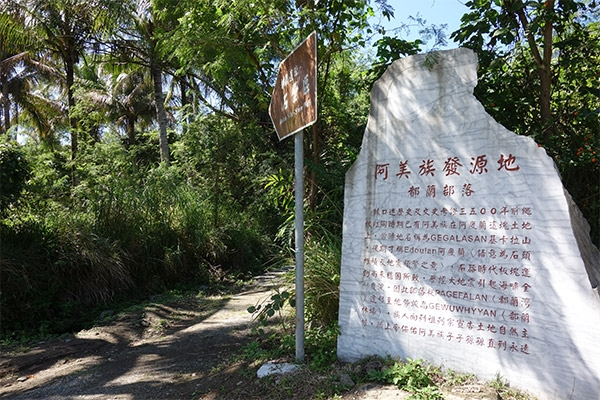
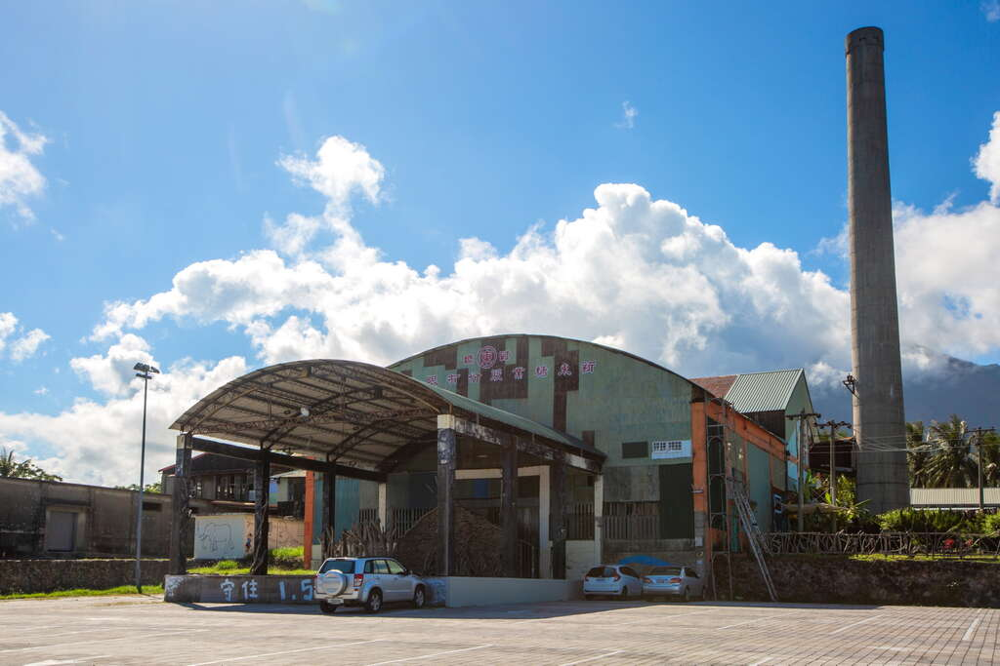
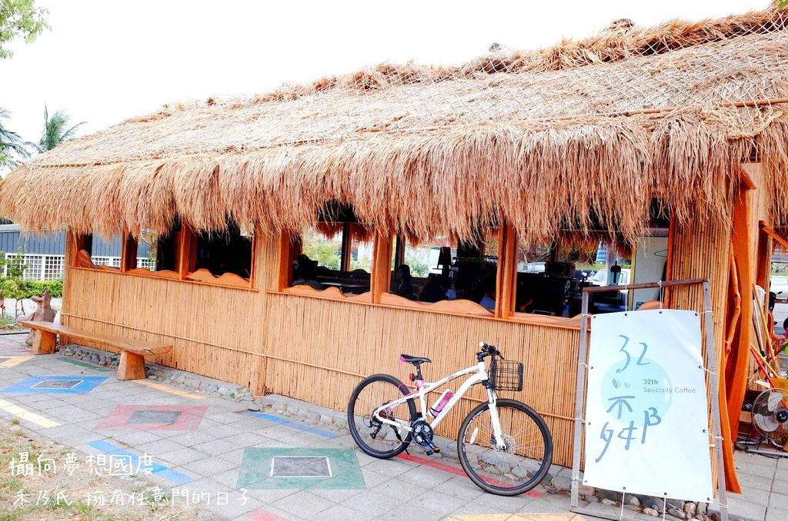
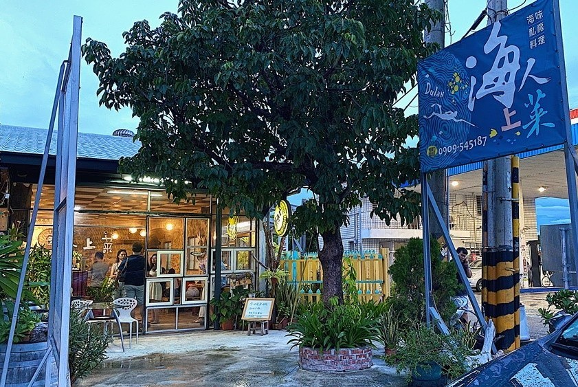
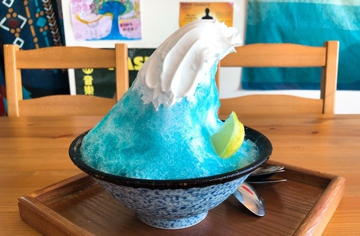
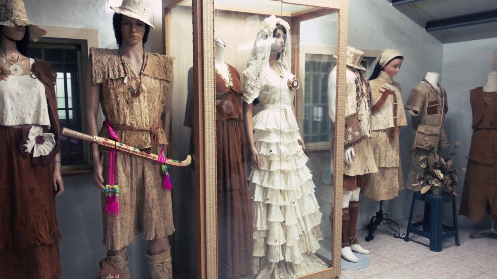
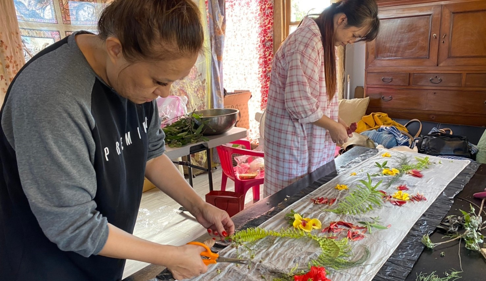

月光小棧位於都蘭山麓，一樓由在地藝文團隊「女妖在說畫」藝廊經營作為藝術家展演空間， 二樓則保留2003年林正盛導演拍攝之「月光下，我記得」的電影場景。
都蘭遺址位於東河鄉都蘭村西北方約1公里的平緩海階地，是東海岸巨石文化的代表性遺址，距今約3000年前， 根據考古學家的推測，都蘭遺址屬於麒麟文化，目前僅殘留由三塊豎立在地面上的石壁組成的石列與岩棺， 民國77年己被臺東縣政府指定為三級古蹟。
新東糖廠建於日本殖民統治臺灣期間，第二次世界大戰末期曾經遭到盟軍砲彈轟炸，雖然已經廢棄多年， 但仍保留結構完整的木造房舍、辦公室、升旗台和工廠，於民國80年結束營業生產後， 在臺東縣政府輔導下積極轉型為「都蘭紅糖文化園區」，將閒置空間轉化為藝術家合力經營的藝術文化園區。
東河都蘭國小旁，有間阿美族傳統的茅草家屋，是阿美青年布告．阿里，在部落長輩的協助下搭起的咖啡館。 他以「食在地」、「遊在地」為主要概念來發展，希望透過32鄰咖啡，不僅讓外來的旅客認識部落文化， 也讓部落的長輩看見青年回鄉的希望。
都蘭海岸公路旁不可不知道的隱藏版特色料理，每道料理材料都是出自店家親自下海freedive、 上山捕撈的漁獲、野味。其中餐點很特別，除了現做以外每個季節的餐點也不太相同，每次到訪都有意外的驚喜。
來到都蘭不能錯過的特色冰品！店內招牌海浪冰是以藍柑橘為基底、浪花部份則是海鹽奶油，底部藏著海草及椰果， 吃起來鹹鹹甜甜。另外還有使用了台東鹿野有機紅烏龍與東河茶梅的山茶冰，一口下去，茶葉濃郁的香氣配上微甜的珍珠跟煉乳， 這就是台東獨有的味道吧。
樹皮布文化曾是一度失傳的原住民傳統技藝，工作室的主人沈太木（Panay），曾是都蘭部落頭目， 在擔任頭目期間，常常想著要為部落和後輩做些有意義的事情，於是開始研究在部落已經消失的樹皮衣製作。 巴奈達力功工作室的成立，就是要推廣這項阿美族的傳統技藝，使得這項技藝可以讓更多人了解並能代代傳承下去。
「蘭調織女」為都蘭部落ina所組成的獨立品牌，熱愛染、鉤、織的織女們，透過在地藝術家持續地陪伴， 聚集於此共享知識，我們的婦女藉由自身能力及技術，做出代表部落、阿美族文化的在地化產品， 期望外界進一步認識都蘭的內涵。